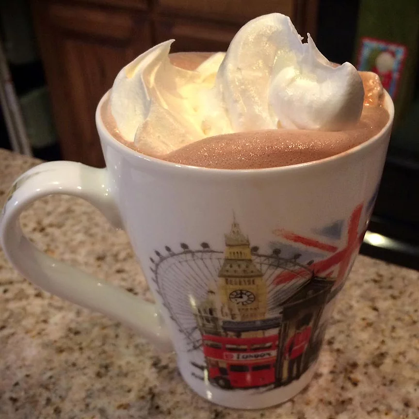

Creamy Hot Cocoa

Description
It's old fashioned, it's comforting, it makes the kitchen smell wonderful and it's good for the soul.
Ingredients
- ⅓ cup unsweetened cocoa powder
- ¾ cup white sugar
- 1 pinch salt
- ⅓ cup boiling water
- 3½ cups milk
- ¾ teaspoon vanilla extract
- ½ cup half-and-half cream
Steps
- Combine the cocoa, sugar and pinch of salt in a saucepan. Blend in the boiling water. Bring this mixture to an easy boil while you stir.
- Simmer and stir for about 2 minutes. Watch that it doesn't scorch.
- Stir in 3 1/2 cups of milk and heat until very hot, but do not boil! Remove from heat and add vanilla.
- Divide between 4 mugs. Add the cream to the mugs of cocoa to cool it to drinking temperature.
Home Page